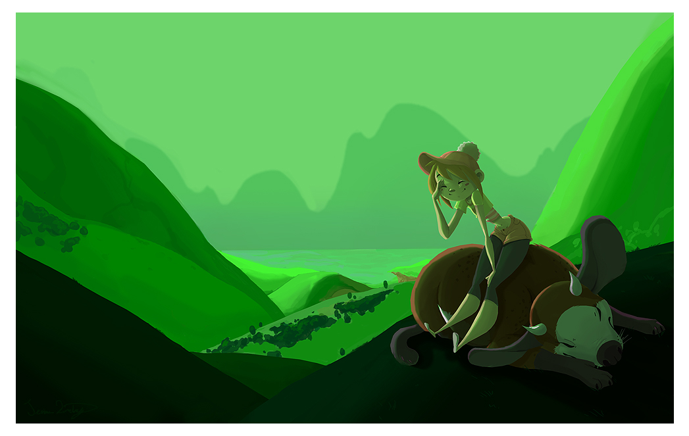

About
About Projects
Projects Books
Books Games
Games Stories
Stories Store
Store Notes
Notes How-to
How-toCompleted during the years 2007 and 2008 at le cegep du vieux Montreal, "Uno" is a short 2d animation film that tells the story of a moment in Ratchet's life.
Ratchet lives on an island high in the sky with her companion Hush. Disconnected from others, she finds an ususual way to communicate with her neighbours.
Watch(Vimeo) the movie.
The story of Uno is the predecessor to my fiction story wiktopher. Ratchet is Eka, and her neighbour on another island is Uno (character in wiktopher shares that same name).
There is much more to this project than the film itself, a lot of research went into it.
Short comic [679.8 KB]
Model Pack [2.3 MB]
Storyboard [1.8 MB]
Poster [3.5 MB]
STUDIES
- Ratchet's desk[3.1 MB]
- The Island[2.3 MB]
- The Bedroom[3.1 MB]
- The other islander[3.4 MB]
- Hush the Basset Hound[2.4 MB]
{kind=link}
{kind=link}
{kind=link}
{kind=link}
{kind=link}
BACKGROUNDS
There was 21 scenes in this film, all drawn traditionally and colored digitally with Photoshop. Frames were colored and assembled in Toonboom Harmony, edited in AfterFX and Premiere.
- The roof[585.8 KB]
- Origami[1.2 MB]
- The Bed[1.4 MB]
- Drawing table[1.1 MB]
- Main room[1.3 MB]
- Drawing table, overhead view[833.6 MB]
- Windvane[1.4 MB]
- Window[906.5 KB]
- Bridge to nowhere[1.1 MB]
- Tree house[1.2 MB]
- Shadow bridge[1.4 MB]
- Bridge close-up[786 KB]
- Flag pole[965.3 KB]
- Bedroom[1.7 MB]
{kind=link}
{kind=link}
{kind=link}
{kind=link}
{kind=link}
{kind=link}
{kind=link}
{kind=link}
{kind=link}
{kind=link}
{kind=link}
{kind=link}
{kind=link}
{kind=link}
OTHER ART
Other art produced during and after production. Soap monster character belonged to devine.
- Soap Monster Returns[177.7 KB]
- A Friend[84 KB]
- A Visit[219.7 KB]
- Tug-o-war[104.4 KB]
- A Hyroo[250.6 KB]
- Don't Be Mean[232.3 KB]
- Mini Soap Monster[259.3 KB]
{kind=link}
{kind=link}
{kind=link}
{kind=link}
{kind=link}
{kind=link}
{kind=link}
Related pages: stories, wiktopher, terat, aodan, finic, and ilken.